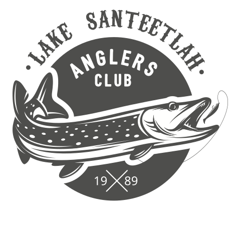
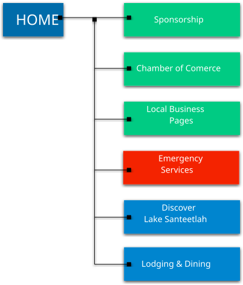

State of North Carolina, Graham County, Lake Santeetlah, City Chamber of Commerce Site Plan
The purpose of the website is to attract visitors and serve as a central digital asset management service for our local commerce and tourism amenities. We want to showcase the great businesses and sites to see, while protecting what makes Lake Santeetlah a beautiful place to live and play.
The first objective of this site will be to attract people who will want to come an enjoy the beautiful vistas and commercial services that our friendly townsfolk have to offer. Afterall, most of our commerce comes from tourism. We want people to have fun in our little town, but we want them to be respectful as well. Our site should emphasize both.
The second objective is to attract businesses and conservationist who will help us keep Lake Santeetlah beautiful, yet profitable.
The key visitors of the site include tourists, business owners, and conservationists who desire to preserve and keep Lake Santeetlah clean and beautiful.
We have pride in our water sports, including the beautiful Lake Santeetlah, voted the most beautiful lake in the United States by visitors and the states people of North Carolina. The designer will show that pride in a logo that we will use in all our city letterhead and online presence.
Designers have made the following proposal for your vote and edit suggestions:


Arial, Sans Serif
carnivalee
Marker Felt
Established in 1989, Lake Santeetlah is revered by North Carolinians as one of the most beautiful camping, fishing, and lake sports venue in Graham County. It is located about 100 miles west of Asheville, along the Indian Lakes Scenic Byway. It is pure nature, unspoiled by big city development. Most of its shoreline resides in the Nantahala National Forest. It is near 7 more great lakes in North Carolina.
Historic Places to Visit
Hotel/Stay Accommodations
Restaurants
Telephone
Trash & Recycling
Water
Propane
Real Estate
Boat Shop
City Council
Police
Fire
Healthcare
Scenarios – Scope of services provided
Purpose – Site purpose and content
Persona – A reliable and realistic representation of our key Audience
Typography – Fonts to use in the site
Wireframe – A simple diagram of the site layout
© 2023 JOHN M HARPER – WEB DESIGN, Lehi, Utah